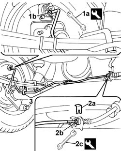

3340B76 rigid pipe(one), lh or rh, to rear brake cylinder - r r
- Path
- Procedures > 33 BRAKES > 3340 A(B.S. ANTI-LOCK BRAKING SYSTEM .) > 3340B abs system pipes > 3340B76 rigid pipe(one), lh or rh, to rear brake cylinder - r r
- Kind
- repair procedure (removal / refitting; the operation number is the code)
- Applies to
- all engines; all production periods
- Interactive page
- https://sloeber94.github.io/elrnDB-fDbl/en/#/2584696
Applies to: all engines; all production periods
 Removing
Removing
 Refitting
RefittingPlace the car on a lift.
Op. 3330C41 BRAKE FLUID RESEVOIR CAP - R.R. FOR VERSIONS WITH ABS.
Draw off the brake fluid from the reservoir using a syringe.
Raise the lift.
1. Use wrench (1a) to disconnect rear brake pipe fitting connector (1b) from the cylinder.
 | Name | Country |
|---|---|---|
1a | Box wrench for brake fittings | 1.856.132.000 |
2. Remove anchorage clip (2a) and undo connector (2b) joining the rigid pipe to the intermediate hose using wrench (2c).
| Name | Country |
|---|---|---|
2c | Box wrench for brake fittings | 1.856.132.000 |
3. Release the pipe from the retaining clips on the rear axle, then remove the clips.

Applies to: all engines; all production periods
Refitting
RemovingFit a new rigid pipe.
Screw the rigid pipe onto the rear cylinder and tighten.
| Name | Country |
|---|---|---|
- | Box wrench for brake fittings | 1.856.132.000 |
 | Fastening | Component | Ø | Value (daNm) |
|---|---|---|---|---|
- | Connector | RIGID PIPE REAR CYLINDERS (ABS) | M10 x 1 | 1.4 |
Tighten the rigid pipe connector to the intermediate hose, then fit the retaining clip.
Secure the rigid pipe to the rear axle using retaining clips.
Op. 0010T64 BRAKE AND/OR CLUTCH FLUID CHECK LEVEL AND TOP UP AS NECESSARY.
Op. 0010T65 HYDRAULIC BRAKE SYSTEM - BLEED AIR.
Op. 0010T66 EXTRAS FOR VERSIONS WITH ABS FOLLOWING OPERATION 0010T65.
Op. 3330C41 BRAKE FLUID RESEVOIR CAP - R.R. FOR VERSIONS WITH ABS.
Remove the car from the lift.